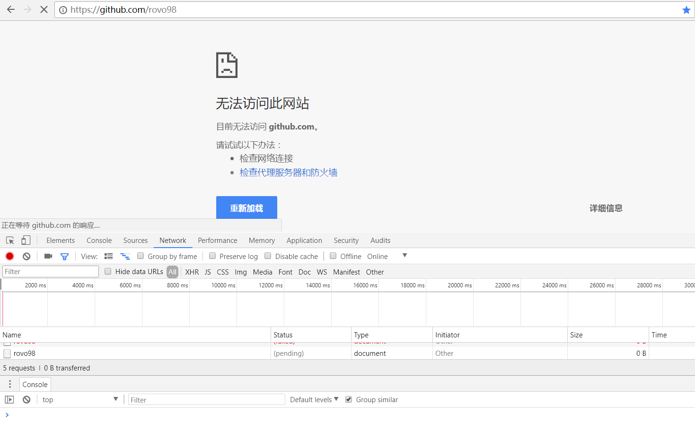
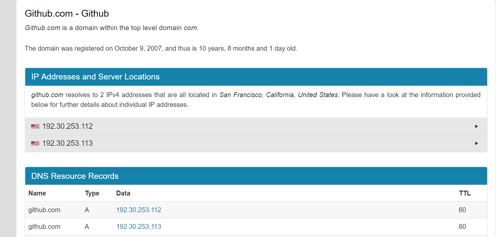
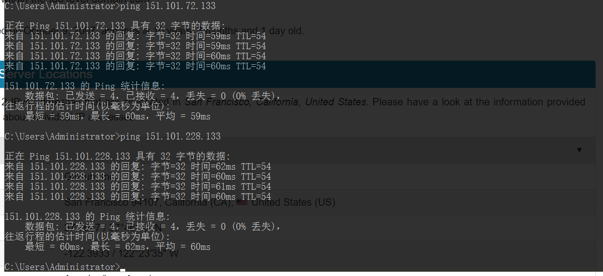

解决Github国内访问出现的问题
主要通过修改hosts文件解决Github在国内访问不了、访问慢和页面加载异常的问题(没钱买vpn~)。
简单了解一下github, github是目前全球最大的男性同性交友网站(~滑稽~), 使用示例如下：

开个玩笑，回归正题。
为什么访问不了以及访问速度会很慢？
GitHub在中国大陆访问速度慢的问题原因有很多，但最直接和最主要的原因是GitHub的分发加速网络的域名遭到DNS污染。
由于GitHub的加速分发CDN域名assets-cdn.github.com遭到DNS污染，导致无法连接使用GitHub的加速分发服务器，才使得中国大陆访问速度很慢。

如何解决DNS污染？
一般的DNS问题都可以通过修改Hosts文件来解决，GitHub的CDN域名被污染问题也不例外，同样可以通过修改Hosts文件解决。
将域名解析直接指向IP地址来绕过DNS的解析，以此解决污染问题。
获取被污染域名的实际IP地址
访问ipaddress.com,使用ip lookup 工具获得相关域名的ip地址。
例如： github.com

可以看到，我查出的域名ip地址为： 192.30.253.112 和 192.30.253.113 (任取一个即可)
修改host文件，在文件中添加一行：
[注] ： windows的hosts文件位置为：C:/windows/system32/drivers/etc/hosts
1 | 192.30.253.112 github.com |
刷新dns缓存
打开命令行cmd,输入如下命令：
1 | ipconfig /flushdns |
此时再刷新页面即可。此时可以正常访问github，但是访问速度还是很慢，我们接着做优化。
Github 访问提速
在hosts文件中继续加入，如下代码：
1 | # GitHub Start |
注意 : 这里域名对应的ip是通过dns查询工具查询得到的，你应当选择的是延时相对较小且比较稳定的ip。
例如，上面的151.101.228.133是对我来说较好的ip:

快速地访问github
再次刷新dns缓存后，你已经可以快速地访问github了。